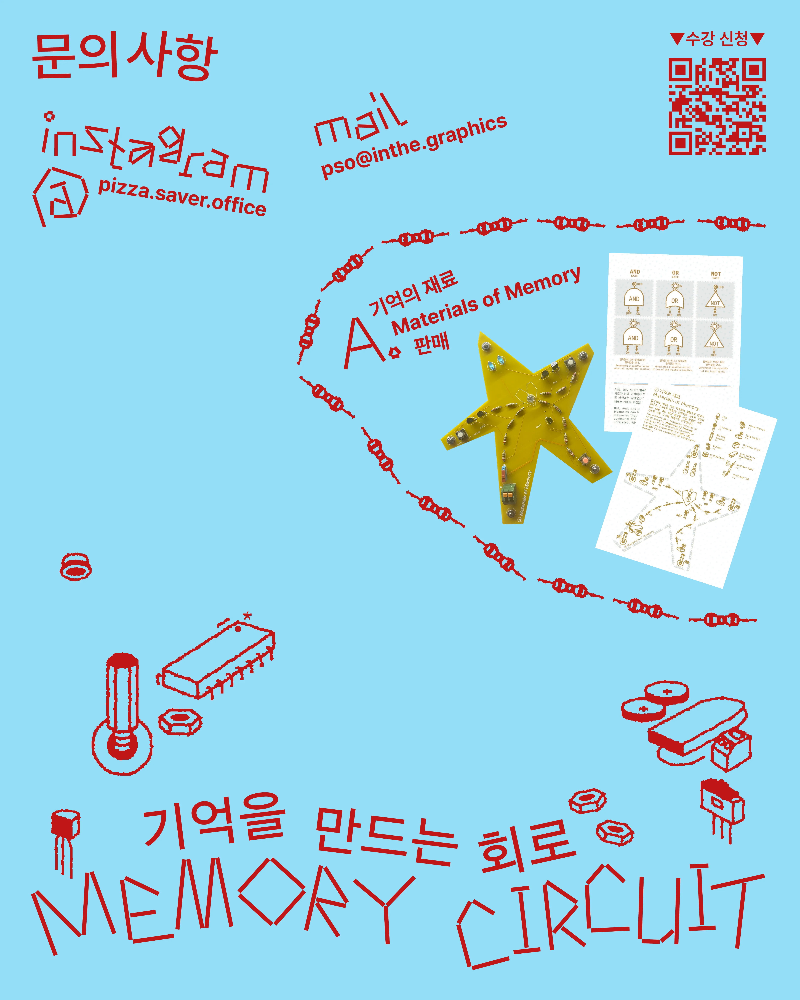
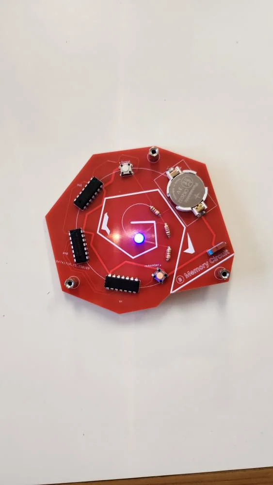
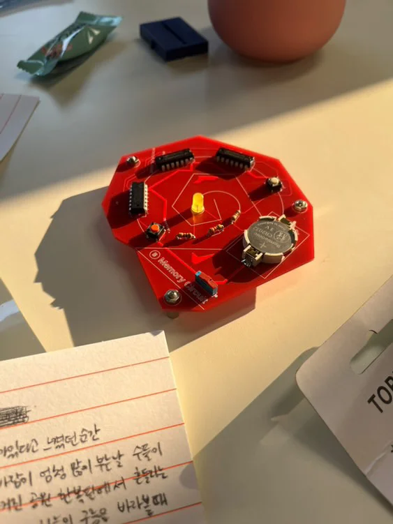
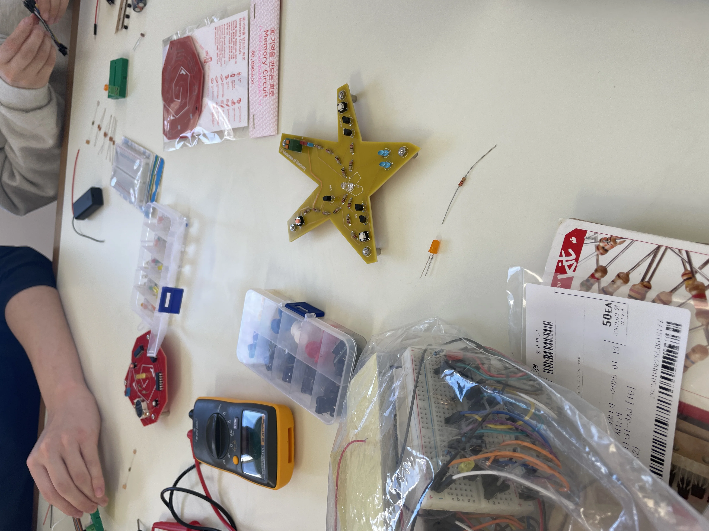
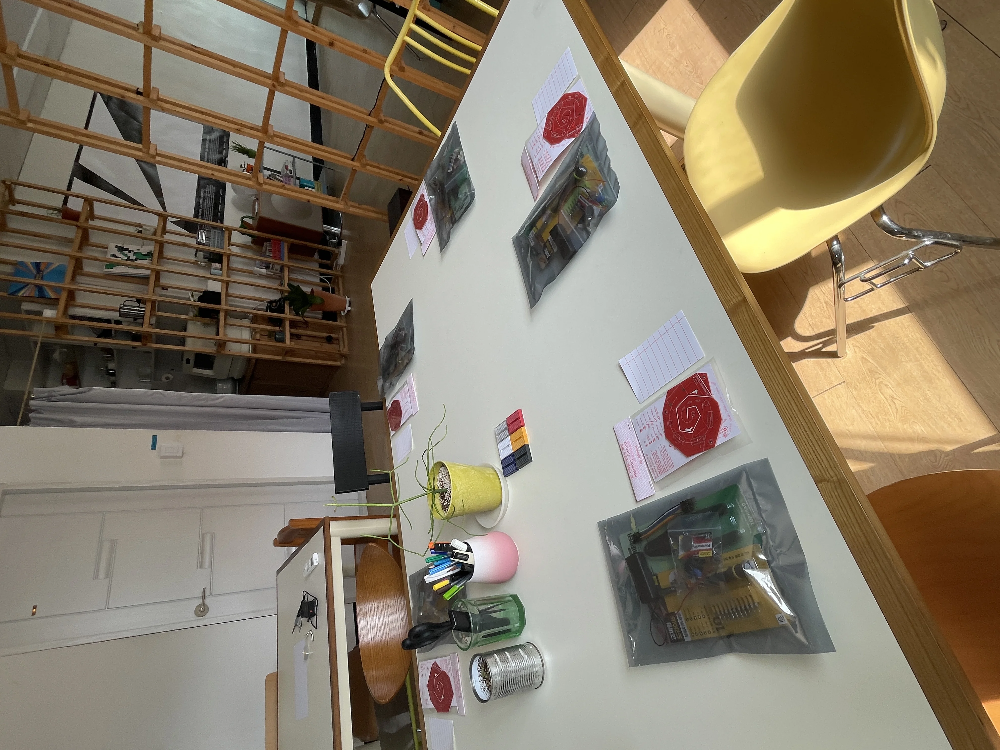
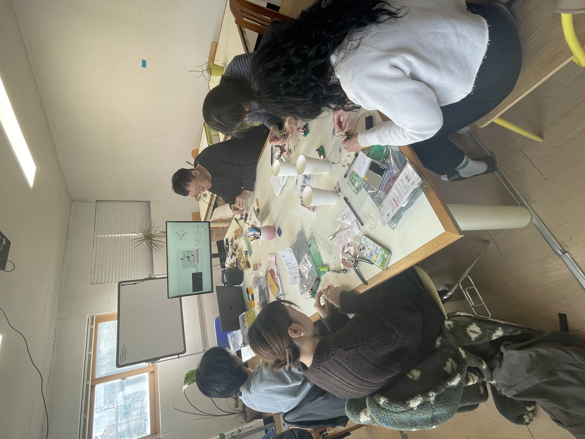
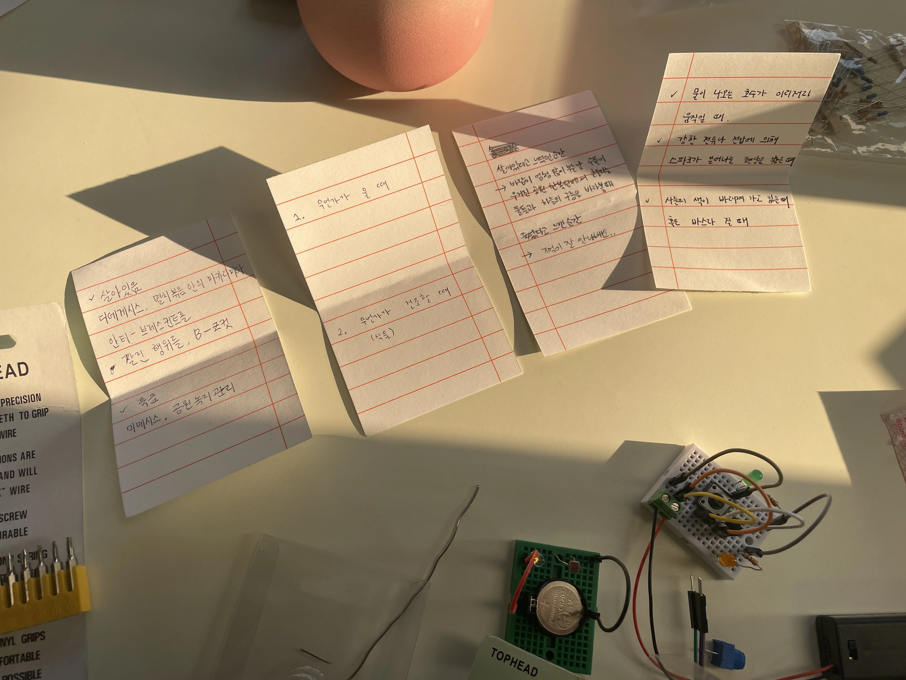
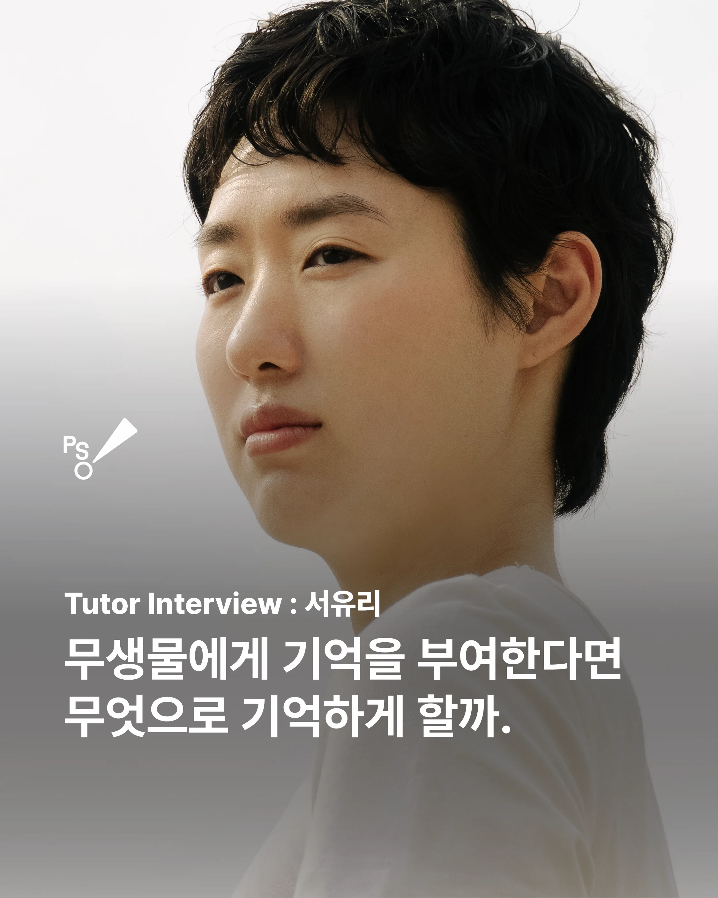
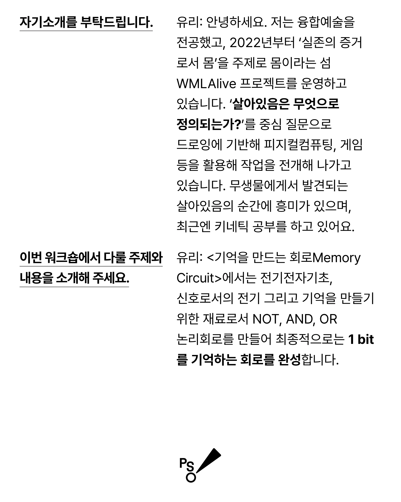

기억을 만드는 회로를 만들어보는 워크샵입니다. 참가자들은 전자회로기초를 배우며, 1bit를 기록하는 회로를 만들어봅니다.
워크샵 대상:
기억을 만드는 회로Memory Circuit가 뭔지 궁금한 사람
컴퓨터의 기억을 만드는 재료가 궁금한 사람
전기와 전자회로가 궁금한 사람
해당 주제에 대해 이야기 나누고 싶은 사람

인터뷰 1

인터뷰 2